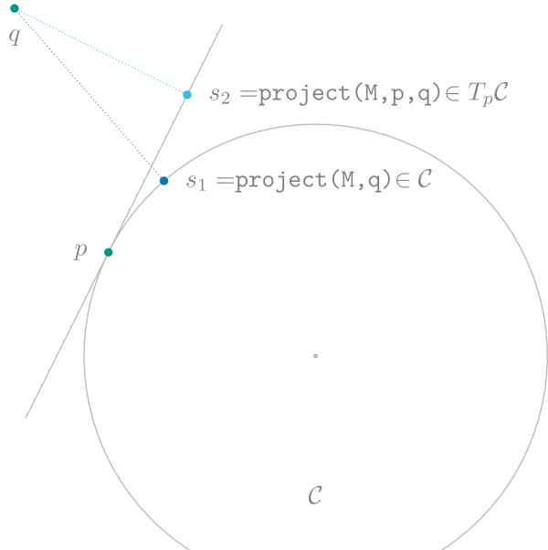

Projections
A manifold might be embedded in some space. Often this is implicitly assumed, for example the complex Circle is embedded in the complex plane. Let‘s keep the circle in mind in the following as a simple example. For the general case see of explicitly stating an embedding and/or distinguising several, different embeddings, see Embedded Manifolds below.
To make this a little more concrete, let‘s assume we have a manifold $\mathcal M$ which is embedded in some manifold $\mathcal N$ and the image $i(\mathcal M)$ of the embedding function $i$ is a closed set (with respect to the topology on $\mathcal N$). Then we can do two kinds of projections.
To make this concrete in an example for the Circle $\mathcal M=\mathcal C := \{ p ∈ ℂ | |p| = 1\}$ the embedding can be chosen to be the manifold $N = ℂ$ and due to our representation of $\mathcal C$ as complex numbers already, we have $i(p) = p$ the identity as the embedding function.
- Given a point $p∈\mathcal N$ we can look for the closest point on the manifold $\mathcal M$ formally as
\[ \operatorname*{arg\,min}_{q\in \mathcal M} d_{\mathcal N}(i(q),p)\]
And this resulting $q$ we call the projection of $p$ onto the manifold $\mathcal M$.
- Given a point $p∈\mathcal M$ and a vector in $X\inT_{i(p)}\mathcal N$ in the embedding we can similarly look for the closest point to $Y∈ T_p\mathcal M$ using the pushforward $\mathrm{d}i_p$ of the embedding.
\[ \operatorname*{arg\,min}_{Y\in T_p\mathcal M} \lVert \mathrm{d}i(p)[Y] - X \rVert_{i(p)}\]
And we call the resulting $Y$ the projection of $X$ onto the tangent space $T_p\mathcal M$ at $p$.
Let‘s look at the little more concrete example of the complex Circle again. Here, the closest point of $p ∈ ℂ$ is just the projection onto the circle, or in other words $q = \frac{p}{\lvert p \rvert}$. A tangent space $T_p\mathcal C$ in the embedding is the line orthogonal to a point $p∈\mathcal C$ through the origin. This can be better visualized by looking at $p+T_p\mathcal C$ which is actually the line tangent to $p$. Note that this shift does not change the resulting projection relative to the origin of the tangent space.
Here the projection can be computed as the classical projection onto the line, i.e. $Y = X - ⟨X,p⟩X$.
this is illustrated in the following figure

ManifoldsBase.project! — Methodproject!(M::AbstractManifold, Y, p, X)Project ambient space representation of a vector X to a tangent vector at point p on the AbstractManifold M. The result is saved in vector Y. This method is only available for manifolds where implicitly an embedding or ambient space is given. Additionally, project! includes changing data representation, if applicable, i.e. if the tangents on M are not represented in the same way as points on the embedding, the representation is changed accordingly. This is the case for example for Lie groups, when tangent vectors are represented in the Lie algebra. after projection the change to the Lie algebra is perfomed, too.
See also: EmbeddedManifold, embed!
ManifoldsBase.project! — Methodproject!(M::AbstractManifold, q, p)Project point p from the ambient space onto the AbstractManifold M. The result is storedin q. This method is only available for manifolds where implicitly an embedding or ambient space is given. Additionally, the projection includes changing data representation, if applicable, i.e. if the points on M are not represented in the same array data, the data is changed accordingly.
See also: EmbeddedManifold, embed!
ManifoldsBase.project — Methodproject(M::AbstractManifold, p, X)Project ambient space representation of a vector X to a tangent vector at point p on the AbstractManifold M. This method is only available for manifolds where implicitly an embedding or ambient space is given. Additionally, project includes changing data representation, if applicable, i.e. if the tangents on M are not represented in the same way as points on the embedding, the representation is changed accordingly. This is the case for example for Lie groups, when tangent vectors are represented in the Lie algebra. after projection the change to the Lie algebra is perfomed, too.
See also: EmbeddedManifold, embed
ManifoldsBase.project — Methodproject(M::AbstractManifold, p)Project point p from the ambient space of the AbstractManifold M to M. This method is only available for manifolds where implicitly an embedding or ambient space is given. Additionally, the projection includes changing data representation, if applicable, i.e. if the points on M are not represented in the same array data, the data is changed accordingly.
See also: EmbeddedManifold, embed